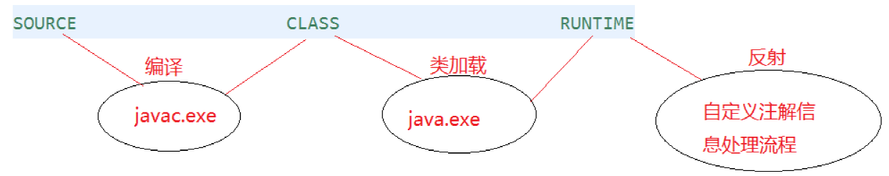

课程：宋红康 JAVA
注解(Annotation)概述
- 从JDK5.0开始，Java增加了对元数据(MetaData)的支持，也就是Annotation(注解)
- Annotation其实就是代码里的特殊标记，这些标记可以在编译,类加载,运行时被读取,并执行相应的处理。通过使用Annotation,程序员可以在不改变原有逻辑的情况下，在源文件中嵌入一些补充信息。代码分析工具、开发工具和部署工具可以通过这些补充信息进行验证或者进行部署。
- Annotation可以像修饰符一样被使用，可用于修饰包，类,构造器,方法,成员变量,参数,局部变量的声明,这些信息被保存在Annotation的“name=value”对中。
- 在JavaSE中，注解的使用目的比较简单，例如标记过时的功能，忽略警告等。在JavaEE/Android中注解占据了更重要的角色，例如用来配置应用程序的任何切面，代替JavaEE旧版中所遗留的繁冗代码和XML配置等。
- 未来的开发模式都是基于注解的，JPA是基于注解的，Spring2.5以上都是基于注解的，Hibernate3.x以后也是基于注解的，现在的Struts2有一部分也是基于注解的了，注解是一种趋势，一定程度上可以说：框架=注解+反射+设计模式。
常见的Annotation示例：
使用Annotation时要在其前面增加@符号,并把该Annotation当成一个修饰符使用。用于修饰它支持的程序元素
生成文档相关的注解：
- @ author：标明开发该类模块的作者，多个作者之间使用,分割
- @version：标明该类模块的版本
- @see：参考转向，也就是相关主题
- @since：从哪个版本开始增加的
- @param：对方法中某参数的说明，如果没有参数就不能写
- @return：对方法返回值的说明，如果方法的返回值类型是void就不能写
- @exception：对方法可能抛出的异常进行说明，如果方法没有用throws显式抛出的异常就不能写
- @param @return和@exception这三个标记都是只用于方法的。
- @param的格式要求：@ param 形参名形、参类型形、参说明
- @return的格式要求：@return 返回值类型、返回值说明
- @exception的格式要求：@exception异常类型、异常说明
- @param和@exception可以并列多个
在编译时进行格式检查(JDK内置的三个基本注解)
- @Override: 限定重写父类方法, 该注解只能用于方法
- @Deprecated: 用于表示所修饰的元素(类, 方法等)已过时。通常是因为所修饰的结构危险或存在更好的选择
- @SuppressWarnings: 抑制编译器警告
跟踪代码依赖性，实现替代配置文件功能：
如spring的一些注解：@Configration；@Compoment等等
自定义Annotation
- 定义新的Annotation类型使用**
@interface**关键字 - 自定义注解自动继承了
java.lang.annotation.Annotation接口 - Annotation的成员变量在Annotation定义中以无参数方法的形式来声明。其方法名和返回值定义了该成员的名字和类型。我们称为配置参数。类型只能是八种基本数据类型、String类型、Class类型、enum类型、Annotation类型、以上所有类型的数组。
- 可以在定义Annotation的成员变量时为其指定初始值，指定成员变量的初始值可使用default关键字
- 如果只有一个参数成员，建议使用参数名为value
- 如果定义的注解含有配置参数，那么使用时必须指定参数值，除非它有默认值。格式是“参数名=参数值”，如果只有一个参数成员，且名称为value,可以省略“value=”
- 没有成员定义的Annotation称为标记;包含成员变量的Annotation 称为元数据Annotation
- 自定义注解必须配上注解的信息处理流程(使用反射)才有意义。
JDK中的元注解
元注解：对现有的注解进行解释说明的注解
Retention：指定所修饰的 Annotation 的生命周期, @Rentention包含一个RetentionPolicy类型的成员变量,使用@Rentention时必须为该value成员变量指定值:
RetentionPolicy.SOURCE:在源文件中有效(即源文件保留)，编译器直接丢弃这种策略的注释
RetentionPolicy.CLASS:在class文件中有效(即class保留)，当运行Java程序时，JVM不会保留注解。这是默认值
RetentionPolicy.RUNTIME:在运行时有效(即运行时保留),当运行Java程序时，JVM会保留注释。程序可以通过反射获取该注释。
public enum RetentionPolicy { SOURCE, CLASS, RUNTIME }只有声明为RUNTIME生命周期的注解，才能通过反射获取
Target：用于指定被修饰的Annotation 能用于修饰哪些程序元素。@Target也包含一个名为value的成员变量。
public enum ElementType { /** Class, interface (including annotation type), or enum declaration */ TYPE, /** Field declaration (includes enum constants) */ FIELD, /** Method declaration */ METHOD, /** Formal parameter declaration */ PARAMETER, /** Constructor declaration */ CONSTRUCTOR, /** Local variable declaration */ LOCAL_VARIABLE, /** Annotation type declaration */ ANNOTATION_TYPE, /** Package declaration */ PACKAGE, /**表示该注解能写在类型变量的声明语句中（如：泛型声明） * Type parameter declaration * @since 1.8 */ TYPE_PARAMETER, /**表示该注解能写在使用类型的任何语句中 * Use of a type * @since 1.8 */ TYPE_USE }@Documented:用于指定被该元Annotation修饰的Annotation类将被javadoc工具提取成文档。默认情况下，javadoc是不包括注解的。定义为Documented的注解必须设置Retention值为RUNTIME。
@Inherited：被它修饰的Annotation将具有继承性。如果某个类使用了被@Inherited修饰的Annotation,则其子类将自动具有该注解。
- 比如：如果把标有@Inherited注解的自定义的注解标注在类级别上，子类则可以继承父类类级别的注解。
- 实际应用中，使用较少
JDK8中注解的新特性：
- 元注解@Target的参数类型ElementType枚举值多了两个：ElementType.TYPE_PARAMETER 和ElementType.TYPE_USE
- 可重复注解：（可查看下面代码）
- 在MyAnnotation上声明@Repeatable，成员值为MyAnnotations.class
- MyAnnotation的Target和Retention等元注解与MyAnnotations相同。
代码
@Inherited
@Retention(RetentionPolicy.RUNTIME)
@Target({TYPE, FIELD, METHOD, PARAMETER, CONSTRUCTOR, LOCAL_VARIABLE})
public @interface MyAnnotations {
MyAnnotation[] value();
}
@Inherited
@Repeatable(MyAnnotations.class)
@Retention(RetentionPolicy.RUNTIME)
@Target({TYPE, FIELD, METHOD, PARAMETER, CONSTRUCTOR, LOCAL_VARIABLE,TYPE_PARAMETER,TYPE_USE})
public @interface MyAnnotation {
String value() default "hello";
}
public class AnnotationTest {
public static void main(String[] args) {
Person p = new Student();
p.walk();
Date date = new Date(2020, 10, 11);
System.out.println(date);
@SuppressWarnings("unused")
int num = 10;
// System.out.println(num);
@SuppressWarnings({ "unused", "rawtypes" })
ArrayList list = new ArrayList();
}
//利用反射获取注解
@Test
public void testGetAnnotation(){
Class clazz = Student.class;
Annotation[] annotations = clazz.getAnnotations();
for(int i = 0;i < annotations.length;i++){
System.out.println(annotations[i]);
}
}
}
//jdk 8之前的写法：我们需要写先写一个数组的注解
//@MyAnnotations({@MyAnnotation(value="hi"),@MyAnnotation(value="hi")})
@MyAnnotation(value="hi")//加入@Repeatable(MyAnnotations.class)后可以重复注解
@MyAnnotation(value="abc")
class Person{
private String name;
private int age;
public Person() {
}
@MyAnnotation
public Person(String name, int age) {
this.name = name;
this.age = age;
}
@MyAnnotation
public void walk(){
System.out.println("人走路");
}
public void eat(){
System.out.println("人吃饭");
}
}
interface Info{
void show();
}
class Student extends Person implements Info{
@Override
public void walk() {
System.out.println("学生走路");
}
public void show() {
}
}
class Generic<@MyAnnotation T>{
public void show() throws @MyAnnotation RuntimeException{
ArrayList<@MyAnnotation String> list = new ArrayList<>();
int num = (@MyAnnotation int) 10L;
}
}
转载请注明来源，欢迎对文章中的引用来源进行考证，欢迎指出任何有错误或不够清晰的表达。可以在下面评论区评论，也可以邮件至 1909773034@qq.com